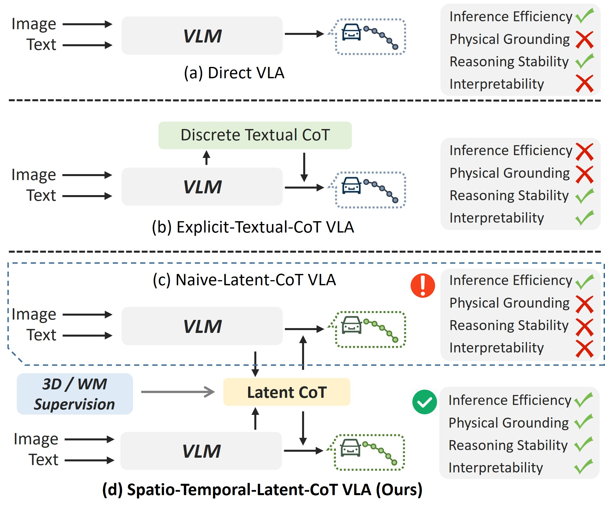
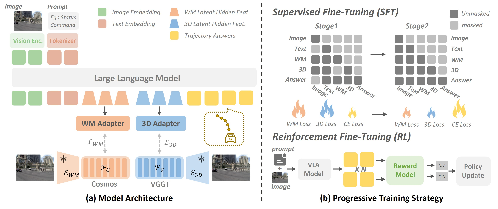
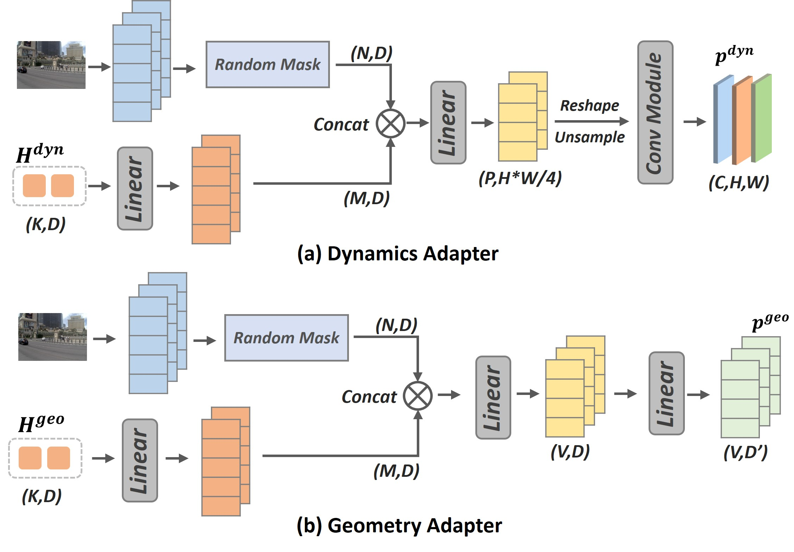
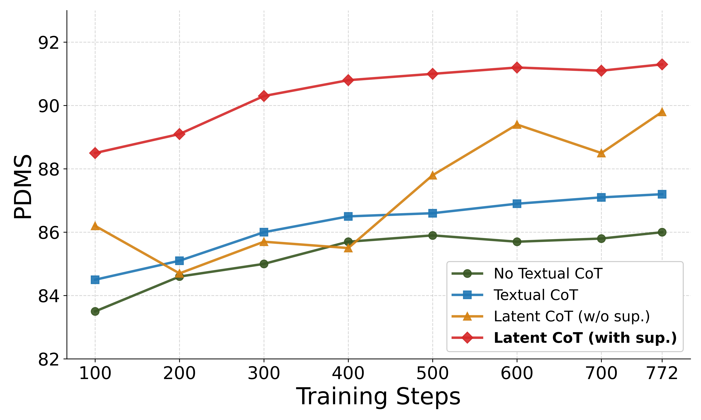
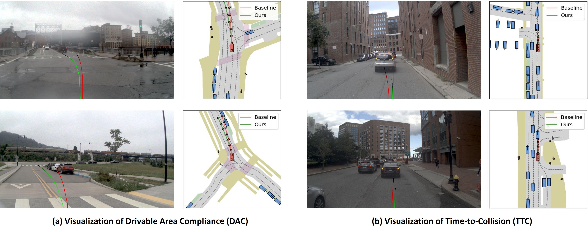
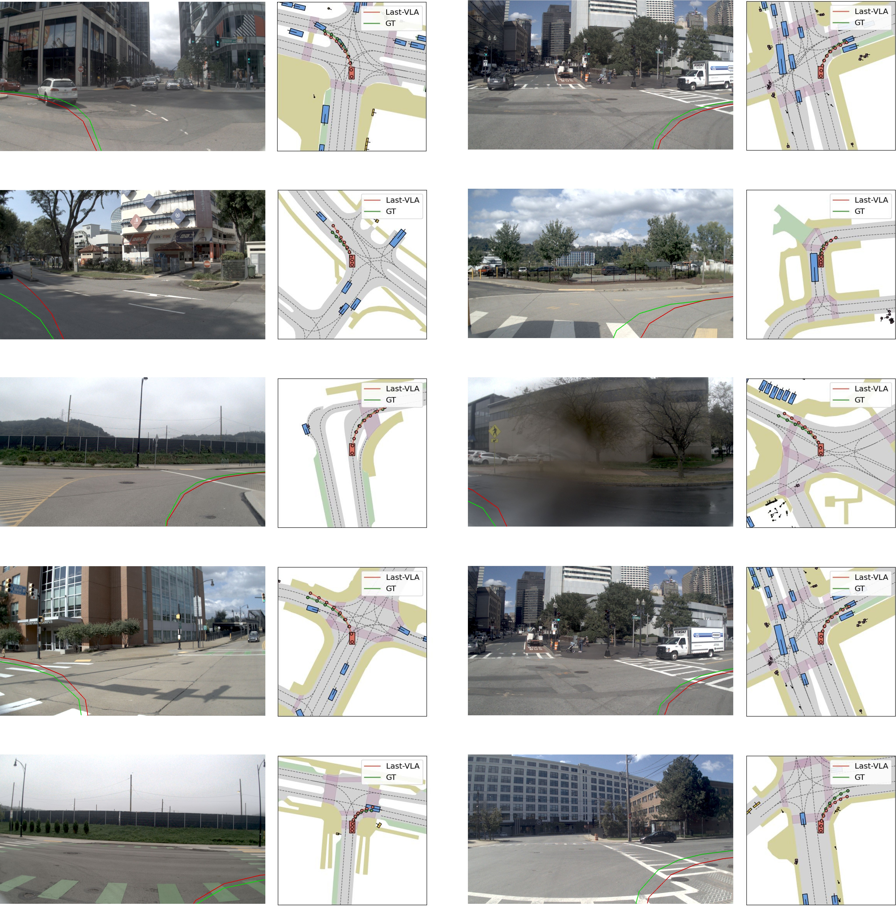

LaST-VLA: Thinking in Latent Spatio-Temporal Space for Vision-Language-Action in Autonomous Driving
1. 论文速览与证据链
一句话贡献
LaST-VLA 用 dual-feature alignment 把 3D foundation model 的几何约束和 world model 的动态预见蒸馏到连续 latent CoT，再经渐进 SFT 与 GRPO 输出合规轨迹。
元数据与阅读定位
| 技术类型 | Latent spatio-temporal chain-of-thought |
|---|---|
| 关键词 | LaST-VLA、latent CoT、3D alignment、world-model distillation、progressive SFT、GRPO、NAVSIM、SURDS、NuDynamics |
| 开源情况 | 论文公开；代码、3D foundation feature 与训练数据发布状态需核查 |
| 适合程度 | 很高：将 3D 几何与世界模型动态蒸馏进 latent CoT |
从哪里开始读
视觉与 ego 状态进入 VLA，adapter 将隐藏状态分别对齐 3D spatial feature 和 future dynamic feature；随后 latent tokens 作为中间 reasoning 状态生成轨迹。训练从 feature alignment 过渡到 trajectory SFT，最后用 GRPO 奖励强化安全、规则和规划质量。 阅读时先确认中间表示是否在部署端运行，再用主结果和消融判断它究竟改善了感知、动态预测还是动作生成。
图表证据链
| # | 原始图 | 支持的主张与边界 |
|---|---|---|
| 1 | 驾驶 CoT 范式演进 | 图中从 direct action、text CoT 到普通 latent CoT 与 spatio-temporal latent CoT，明确本文增加的是物理对齐。 |
| 2 | LaST-VLA 双对齐主架构 | 空间教师、动态教师和 trajectory head 在 latent token 处汇合，展示两类约束的输入输出关系。 |
| 3 | 特征 adapter 细节 | adapter 将异构教师特征投影到 VLA hidden space；该模块是蒸馏能否稳定的关键接口。 |
| 4 | NAVSIM 规划结果与消融 | 曲线/柱状比较不同训练阶段和对齐组合，支持 dual alignment 与 GRPO 的增量作用。 |
| 5 | 规划定性比较 | 多场景轨迹对照显示 LaST 对动态体和道路几何的处理；仍是精选案例。 |
| 6 | 失败案例 | 极端场景中的错误轨迹揭示 latent reasoning 仍受感知和教师预测限制，是结论边界而非装饰图。 |
2. 问题与动机
问题定义
文本 CoT 会把稠密视觉压缩成离散语句，产生语义-感知冲突和冗长解码；普通 latent CoT 又没有明确物理约束，隐藏状态可能只是不可解释的 task feature。LaST-VLA 要让 latent reasoning 同时具备空间几何和时间动态。
现有路线为何不足
direct trajectory VLA 缺少中间推理，textual CoT 可解释但易 hallucinate，纯 hidden-state reasoning 则难保证物理正确。本文通过外部 3D foundation model 与 world model 的双教师对齐，为 latent chain 提供可验证来源。
作者的解题假设
LaST-VLA 用 dual-feature alignment 把 3D foundation model 的几何约束和 world model 的动态预见蒸馏到连续 latent CoT，再经渐进 SFT 与 GRPO 输出合规轨迹。 该假设只有在统一骨干、数据和评测下仍带来增益时才成立。
4. 方法、表示与训练
端到端信息流
视觉与 ego 状态进入 VLA，adapter 将隐藏状态分别对齐 3D spatial feature 和 future dynamic feature；随后 latent tokens 作为中间 reasoning 状态生成轨迹。训练从 feature alignment 过渡到 trajectory SFT，最后用 GRPO 奖励强化安全、规则和规划质量。
核心表示
空间分支提供深度、相对位置、朝向等几何约束，时间分支提供未来运动和场景演化；dual alignment 避免单一世界模型只学时间、或单一 3D encoder 忽略交互。latent token 不输出自然语言，减少 semantic bottleneck。
训练阶段与目标
NAVSIM 85k 中筛选 navtrain-hard-24k 提高训练效率；SURDS 测 3D 空间推理，作者另构建 NuDynamics 测 motion state。渐进 SFT 先稳定特征对齐再学轨迹，GRPO 根据规划与规则奖励优化。
推理与部署路径
部署只保留 VLA、adapter 与 latent reasoning，不需要生成长文本；轨迹由 hidden spatio-temporal chain 条件化。相对 textual CoT 延迟更低，但教师蒸馏错误和 latent 不可读性需要额外诊断。
驾驶 CoT 范式演进

LaST-VLA 双对齐主架构

特征 adapter 细节

5. 实验、结果与消融
数据集、任务与协议
规划在 NAVSIM v1/v2 上以 PDMS/EPDMS 评价；空间推理用 SURDS 的 yaw、pixel、depth、distance、left/right、front/behind；动态理解用 NuDynamics motion metric。该组合把规划结果与中间能力分开测量。
主要定量结果
论文报告 NAVSIM v1 PDMS 91.3、v2 EPDMS 87.1，并在 SURDS/NuDynamics 上提升空间和动态推理。强结果说明双对齐与 RL 能共同改善规划，但新建 NuDynamics 的数据和评价独立性仍需审查。
消融与因果解释
空间-only、动态-only 与 dual alignment 用于判断两类教师是否互补；progressive SFT 和 GRPO 逐项增加，隔离表示对齐与策略优化贡献。failure 图显示纯文本 guidance 可能与视觉冲突，latent 方法仍会在极端遮挡/稀有交互中失败。
证据没有覆盖什么
从当前评测覆盖看，双教师增加训练依赖，3D/world model 的偏差会被蒸馏；latent CoT 难以给驾驶员直接解释。NAVSIM 与自建 benchmark 仍非真实道路闭环，GRPO 可能优化已知规则而忽略开放世界异常。
NAVSIM 规划结果与消融

规划定性比较

失败案例

6. 复现路径与工程风险
最小可行复现
最低路径是 NAVSIM hard-24k + 固定 VLM，先训练 3D adapter 和 dynamics adapter，再做 trajectory SFT；若没有原教师，可用公开 depth/BEV encoder 与视频 world model替代。验收需同时复现 PDMS 和 SURDS/NuDynamics，而非只看轨迹分数。
验收标准
论文报告 NAVSIM v1 PDMS 91.3、v2 EPDMS 87.1，并在 SURDS/NuDynamics 上提升空间和动态推理。强结果说明双对齐与 RL 能共同改善规划，但新建 NuDynamics 的数据和评价独立性仍需审查。 复现时至少应恢复相同方向的增益，并报告同一随机种子、数据规模和延迟预算。
复现风险清单
| 环节 | 具体风险 |
|---|---|
| 数据 | 需取得论文列出的训练数据、相同切分与时间同步；未公开数据必须单列。 |
| 模型 | 需固定视觉/VLM 骨干、tokenizer 与动作头，避免把模型规模差异误判为方法收益。 |
| 训练 | 按论文阶段顺序复现，并保留无 latent/world objective 的严格对照。 |
| 评测 | 同时复现主指标、消融和失败类型；开环结果不能替代闭环安全。 |
| 硬件 | 最低路径是 NAVSIM hard-24k + 固定 VLM，先训练 3D adapter 和 dynamics adapter，再做 trajectory SFT；若没有原教师，可用公开 depth/BEV encoder 与视频 world model替代。验收需同时复现 PDMS 和 SURDS/NuDynamics，而非只看轨迹分数。 |
7. 分析、局限与边界
最有价值的贡献
综合方法与实验证据，LaST-VLA 用 dual-feature alignment 把 3D foundation model 的几何约束和 world model 的动态预见蒸馏到连续 latent CoT，再经渐进 SFT 与 GRPO 输出合规轨迹。
作者结论的适用边界
将结论外推前需要保留以下边界：双教师增加训练依赖，3D/world model 的偏差会被蒸馏；latent CoT 难以给驾驶员直接解释。NAVSIM 与自建 benchmark 仍非真实道路闭环，GRPO 可能优化已知规则而忽略开放世界异常。
可信的后续实验
可加入 uncertainty token 与 teacher disagreement：当空间和动态教师冲突时，让 planner 降速或触发显式 verifier。还可将 latent chain 解码成稀疏可检查状态，而不是完整文本，兼顾审计与效率。
8. 组会问答与阅读结论
Q1. LaST 的核心不是普通 latent CoT 吗？
A：不是；关键是用 3D 与 world-model 双特征把 hidden reasoning 物理化。
Q2. 为何需要两个教师？
A：空间 encoder 约束几何，world model 约束未来，单一教师覆盖不完整。
Q3. 主要结果？
A：NAVSIM v1 PDMS 91.3、v2 EPDMS 87.1。
Q4. 如何证明中间表征有效？
A：除规划外还在 SURDS 和 NuDynamics 分别测试空间与动态能力。
Q5. 最大风险？
A：教师偏差被蒸馏且 latent chain 难以审计，真实闭环尚未覆盖。
我的阅读笔记
结合本批论文的比较，我的后续关注点是：可加入 uncertainty token 与 teacher disagreement：当空间和动态教师冲突时，让 planner 降速或触发显式 verifier。还可将 latent chain 解码成稀疏可检查状态，而不是完整文本，兼顾审计与效率。